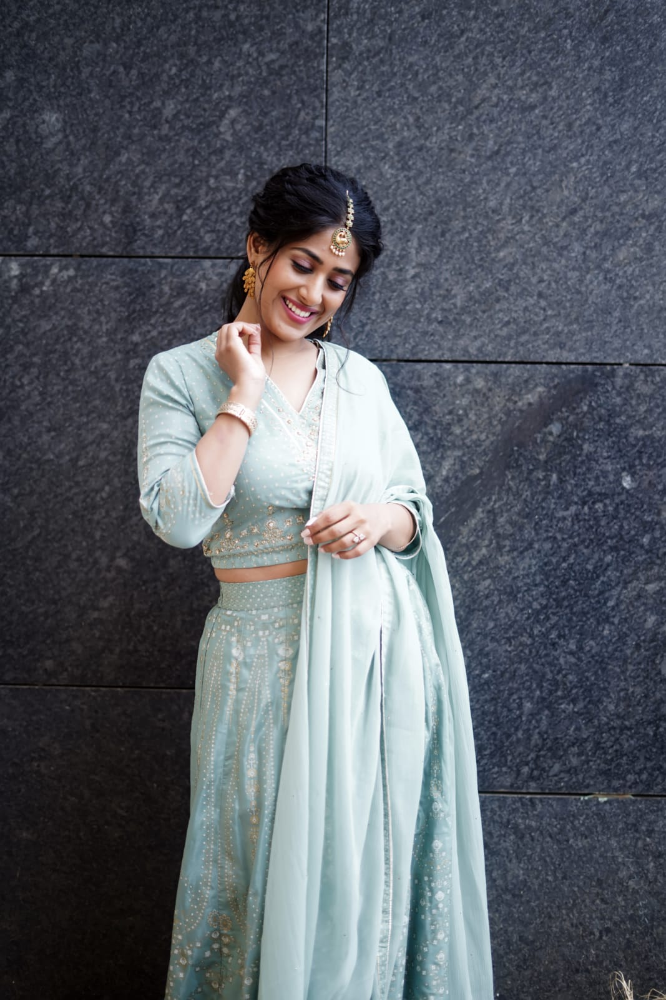
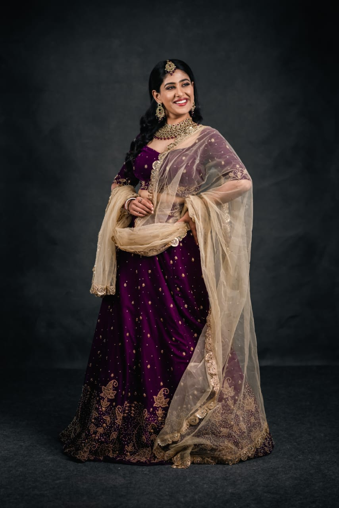
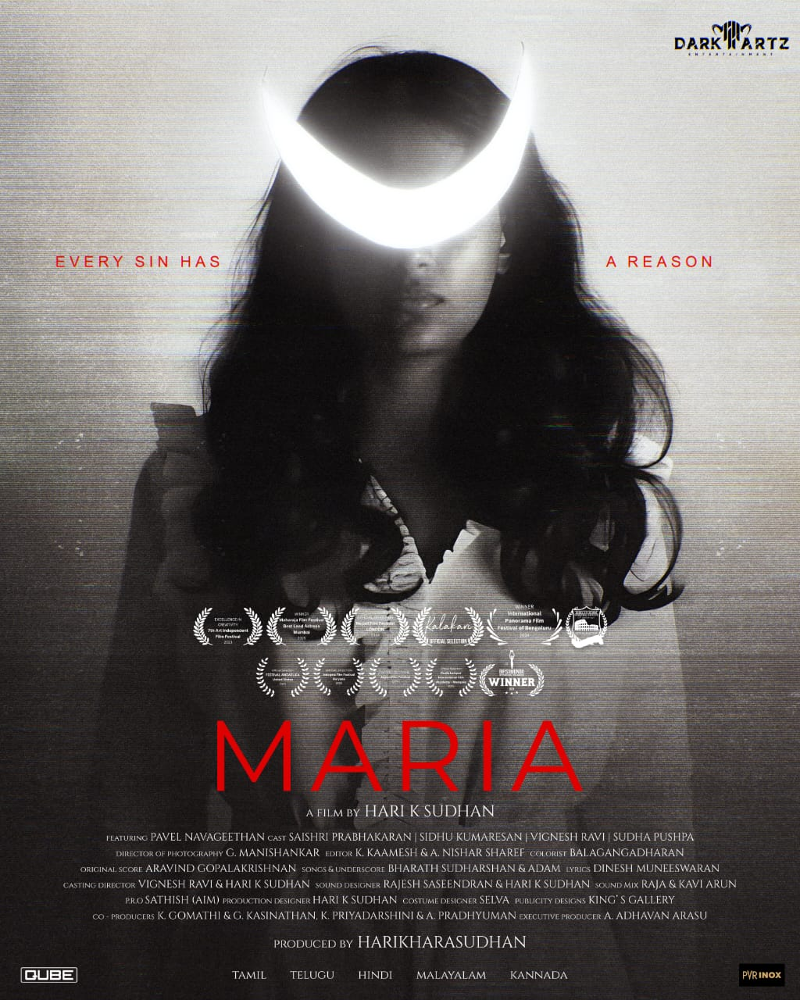

Hey Sinamika
Character role · Directed by Brinda
Romantic comedyJio Studios
Actor · Model · Classical dancer
A curious mind. A searching artist. Stories that stay with you.


A life of many acts
Saishri Prabhakaran moves between two worlds that have always belonged together: the precision of a curious mind and the openness of an artist. Born Bhuvaneswari in Pudukkottai, Tamil Nadu, she made Chennai home as her path led from research to the screen.
Saishri completed her master's degree at IIT Madras and earned her PhD from the University of Western Australia. Her academic work and her artistic life share a curiosity about people and the stories they carry. Film studies and filmmaking opened a door to the screen; training in character acting, Bharatanatyam and modeling helped her walk through it.
She first built her screen presence in ensemble and character roles, then stepped into a demanding lead performance in the psychological drama Maria. Today, she works across Tamil and Kannada cinema, independent films and advertising—drawn to characters with emotional depth and stories that linger.
Selected screen work
From intimate family dramas to bold psychological cinema, each role opens a different door.
Character role · Directed by Brinda
Supporting role · Directed by Pa. Ranjith
Kaaliyammaal · Directed by Vaali Mohan Das
Female lead · CBFC-certified feature
Character role · Directed by S. Shankar
Maria · Titular lead · Directed by Hari K. Sudhan
Saishri has also been cast in a second, as-yet-untitled Kannada feature. Streaming availability varies by region.

A defining performance · 2025
Her first lead role places Saishri at the heart of a psychological drama about faith, desire and the search for freedom. Told through Maria's point of view, the film follows a nun confronting a profound spiritual and psychological crisis.
After screenings at the Maharaja, Coliseum International and Kalakari film festivals, Maria arrived in cinemas on 3 October 2025.
On camera, beyond cinema
Her commercial work spans everyday Tamil life, thoughtful campaigns and familiar brands.
Featured campaign
Tea for Tamilians celebrates the care, ritual and cultural values woven into everyday life. A campaign created by Mullen Lintas Bangalore.
Summer Sale TV advertisement · Eskimo Advertising Factory
Watch campaign ↗AC & smartwatch offer · Marlia Ads, directed by Sadiq
Watch campaign ↗Plots, apartments & villas · Eskimo Advertising Factory
Watch campaign ↗Student tracking device · Eskimo Advertising with Som Shekar
Watch campaign ↗Interviews · trailers · appearances
Conversations about the craft, glimpses from set, and moments from the journey so far.
Also in the press: Cinema Express on the Maria team ↗ More from Cinema Express ↗
Portraits · presence · possibility
A few frames from Saishri's portrait collection. Select any image to see the full photograph.
For work & conversations
For collaborations, projects and professional enquiries.
Connect on Instagram